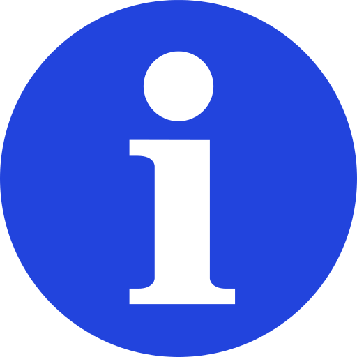

¿QUE ES ESTO?
▸ Esta pagina reúne un conjunto de herramientas para explorar, monitorear e interactuar con las redes Zcash, Firo, Ycash y PIVX desde una interfaz simple, liviana y enfocada en la privacidad.
Toda la información se procesa a nivel de servidor. El navegador únicamente muestra los datos obtenidos, sin ejecutar scripts de terceros ni depender de servicios externos para el procesamiento.
▸ ¿QUÉ OFRECE?
- ◈ Nodos → Estado en tiempo real de la red: bloques, conexiones, mempool y sincronización. (Zcash, Firo, Ycash, PIVX)
- ◈ Exploradores → Consulta de bloques, transacciones y direcciones. (Zcash, Firo, Ycash, PIVX)
- ◈ Consola RPC → Ejecución de comandos directamente sobre el nodo. (Zcash, Firo, Ycash, PIVX)
- ◈ Estadísticas → Información sobre suministro, pools de valor, halvings y actualizaciones de protocolo.
- ◈ Servidores → Estado y disponibilidad de servidores lightwalletd para billeteras ligeras. (Zcash, Firo)
▸ ¿POR QUE?
Porque creo que la información de una red pública debe ser accesible sin depender de plataformas centralizadas. Toda la infraestructura que alimenta esta página es operada por mí, con el objetivo de ofrecer datos transparentes, verificables y sin filtros.
Porque creo que la información de una red pública debe ser accesible sin depender de plataformas centralizadas. Toda la infraestructura que alimenta esta página es operada por mí, con el objetivo de ofrecer datos transparentes, verificables y sin filtros.
Hecho con ♥ desde Argentina · cΔrovΣr0